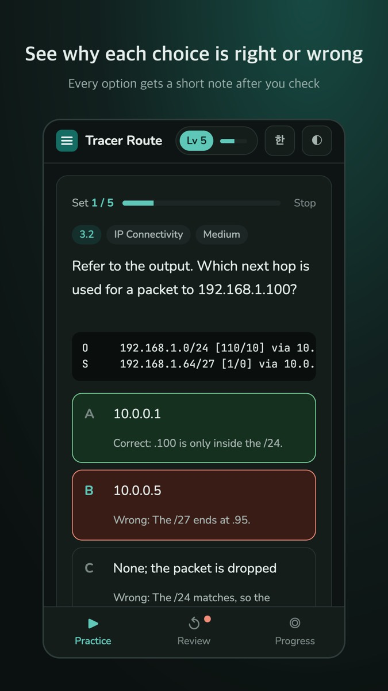
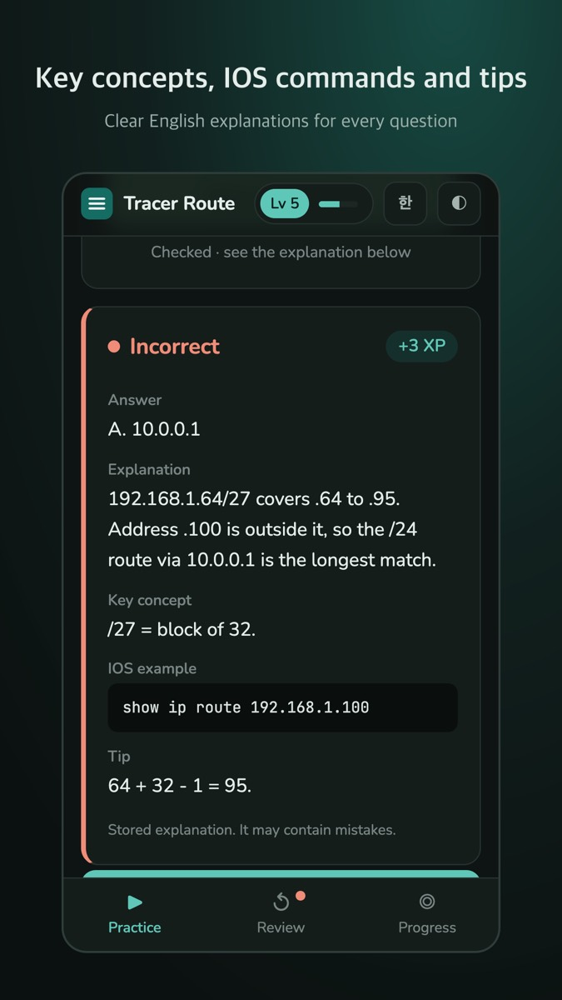
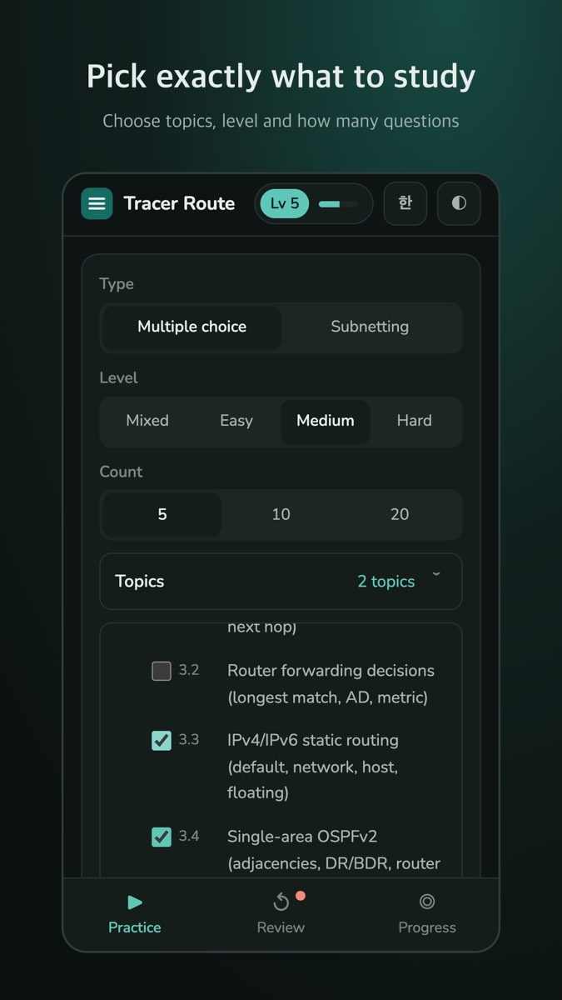
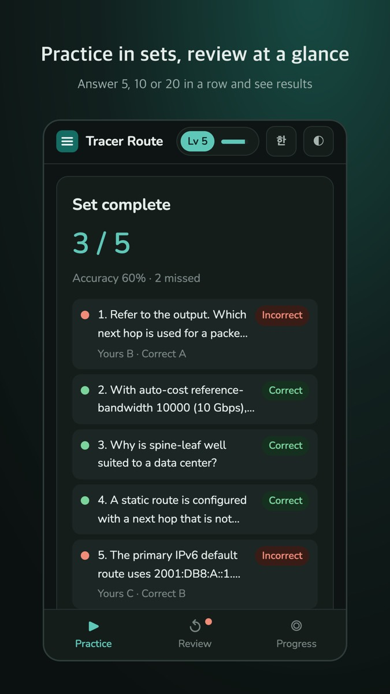
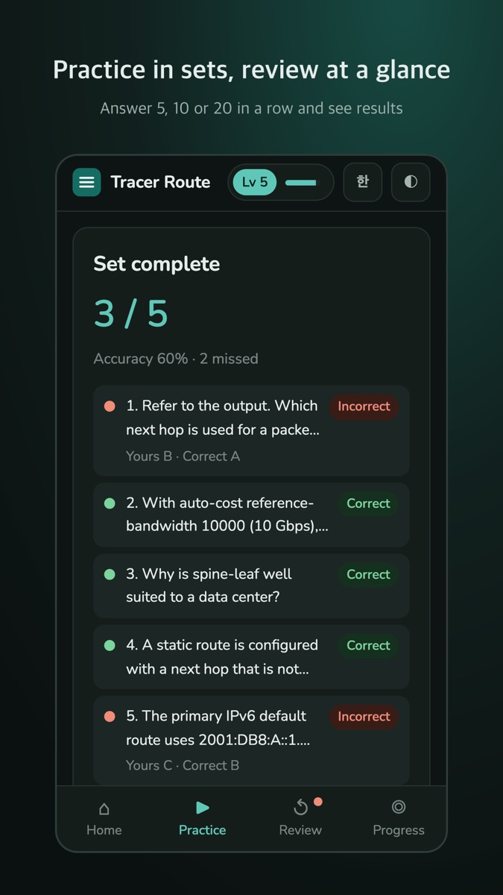
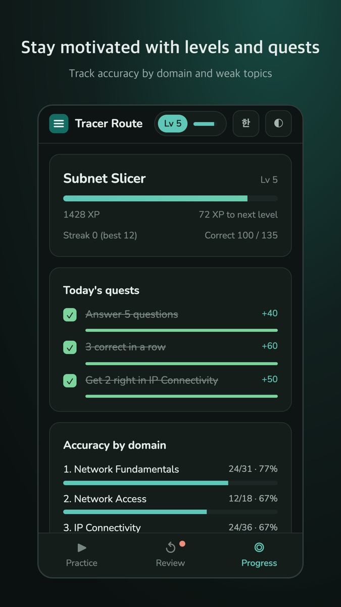
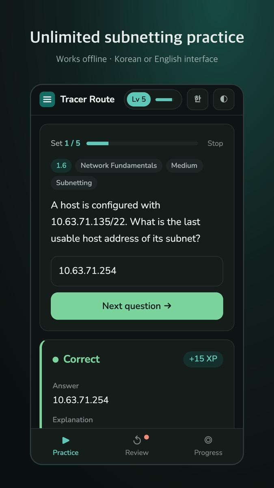
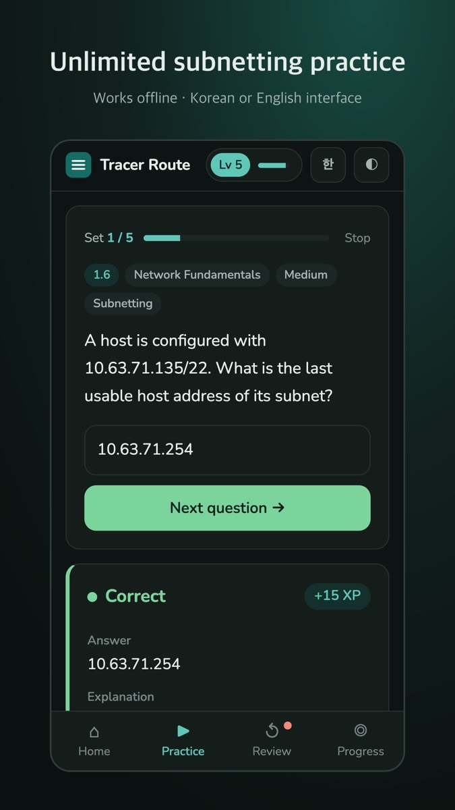

Practice for network certification, and understand every answer.
네트워크 자격증 공부, 답마다 이유까지 이해하기
Tracer Route has 1,808 original practice questions on the CCNA 200-301 topics. Each one explains why the answer is right and why the other choices are wrong.
Tracer Route에는 CCNA 200-301 범위의 직접 만든 연습 문제 1,808개가 있어요. 문제마다 정답인 이유와 나머지 보기가 틀린 이유를 설명해 줘요.
- Free
- 무료
- No ads
- 광고 없음
- No sign-up
- 회원가입 없음
- Works offline
- 오프라인 사용

What's inside
어떤 앱인가요







Swipe to see more →
옆으로 넘겨 더 보기 →
Is it safe to install?
설치해도 안전한가요?
- Installed from Google Play, through its official testing program, and reviewed by Google. No APK files.
- Only one permission: Internet. No location, camera, contacts, photos or storage.
- No ads, analytics or tracking, and no advertising ID.
- No account. It never asks for your name, email or phone number.
- Your progress stays on your phone and is deleted when you uninstall.
- Data leaves your phone only if you tap "Report an error". That report is anonymous (question, reason, optional note, app version) and sent over HTTPS.
- 구글 플레이에서 설치해요. 공식 테스트 프로그램을 거치고 Google 검토를 통과한 앱이에요. APK 파일을 따로 받지 않아요.
- 권한은 '인터넷' 하나뿐이에요. 위치·카메라·연락처·사진·저장소 권한은 없어요.
- 광고·분석·추적 프로그램이 없어요. 광고 ID도 쓰지 않아요.
- 계정이 없어요. 이름·이메일·전화번호를 묻지 않아요.
- 푼 기록은 내 폰에만 저장돼요. 앱을 지우면 같이 지워져요.
- 기기 밖으로 나가는 건 직접 '오류 신고'를 눌렀을 때뿐이에요. 이때도 문제 정보, 신고 이유, 메모(선택), 앱 버전만 익명으로 HTTPS로 보내요.
Details: Privacy policy
자세한 내용: 개인정보 처리방침
How to become a tester (2 minutes)
테스터 되는 방법 (2분)
Google Play lets solo developers publish only after 12 testers have tested for 14 days. Do these two steps in order, on your Android phone if you can.
구글 플레이 규정상 개인 개발자는 12명 이상이 14일 동안 테스트해야 정식 출시할 수 있어요. 아래 두 단계를 순서대로 해 주세요. 안드로이드 폰에서 하면 가장 편해요.
Join the tester list테스터 명단에 이름 올리기
- Open the link below while signed in to Google.
- Tap Join group.
- Tap Join group again in the pop-up. Done. You won't get spam.
- 구글 계정에 로그인된 상태에서 아래 링크를 열어 주세요.
- 그룹 가입(Join group)을 눌러 주세요.
- 창이 뜨면 그룹 가입을 한 번 더 누르면 끝이에요. 스팸은 오지 않아요.
Opt in and install테스터 참여하고 설치하기
- Open the link below.
- Tap Become a tester.
- When it says you're a tester, tap Download it on Google Play and install.
- 아래 링크를 열어 주세요.
- 테스터 되기(Become a tester)를 눌러 주세요.
- "테스터가 되었습니다"가 나오면 Google Play에서 다운로드를 눌러 설치해 주세요.
Use the same Google account as the Play Store on your phone for both steps. Then just keep the app installed until the public launch (about 2–3 weeks). The 14 days only start once 12 testers have joined, so early testers need to stay a little longer. Opening it now and then helps too.
두 단계 모두 폰 플레이 스토어와 같은 구글 계정으로 해 주세요. 그다음엔 정식 출시 때까지 앱을 지우지 않고 두시면 돼요(대략 2~3주). 14일은 테스터 12명이 다 모인 뒤부터 세기 때문에, 먼저 참여하신 분은 조금 더 오래 두셔야 해요. 가끔 열어 주시면 더 좋아요.
Questions
자주 묻는 질문
It says "App not available".
You skipped step 1, or your browser is signed in to a different Google account than your Play Store. Switch accounts and start from step 1.
Do I need to be studying for CCNA?
No. Just installing it and keeping it until the launch helps a lot. If you do study networking, honest feedback is very welcome.
How do I send feedback?
Tap "Report an error" under any explanation. It comes straight to me.
How long do I need to keep it?
Until the app is publicly launched, about 2–3 weeks in total. Google counts 14 days from the point when 12 testers have joined, and I'm still gathering testers. I'll post an update when it's live.
Can I uninstall after the launch?
Yes, anytime after it's publicly launched. Your study history is deleted with the app.
"앱을 사용할 수 없음"이 떠요.
1단계를 안 하셨거나, 브라우저와 플레이 스토어의 구글 계정이 달라서예요. 같은 계정으로 바꾸고 1단계부터 해 주세요.
CCNA 공부를 안 해도 되나요?
네. 설치해서 출시 때까지 두기만 해도 큰 도움이 돼요. 네트워크 공부를 하신다면 솔직한 의견도 환영이에요.
의견은 어떻게 보내요?
해설 아래 '오류 신고' 버튼을 눌러 주세요. 저에게 바로 와요.
얼마나 두면 되나요?
정식 출시 때까지, 모두 합쳐 대략 2~3주예요. 구글은 테스터 12명이 모인 때부터 14일을 세는데, 아직 테스터를 모으는 중이에요. 출시되면 알려 드릴게요.
출시되면 지워도 되나요?
네, 정식 출시 뒤에는 언제든 지우셔도 돼요. 공부 기록도 앱과 함께 지워져요.